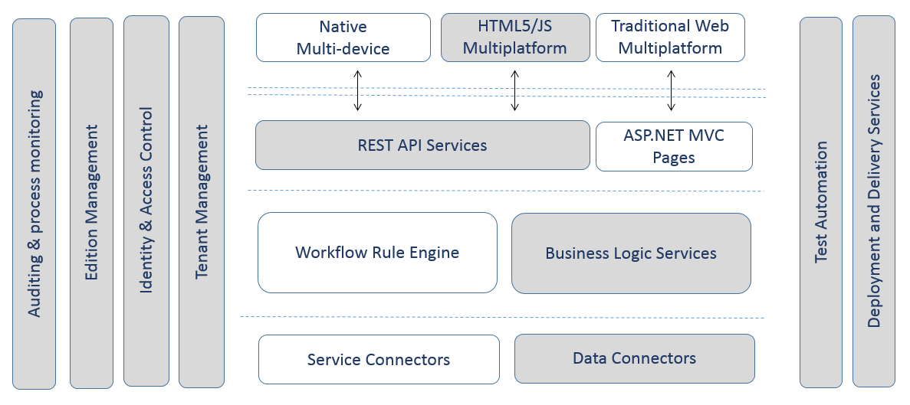

For Whom?
Architectural needs of a software product are vastly different to the needs of a bespoke application. This is mainly due to the product uncertanities such as operational context, competition factors, varying user groups, etc. demand a higher degree of architectural flexibility from a commercial grade software product.
If you are an ISV looking for a standard driven but futuristic reference product architecture to boost your time-to-market, with Codekernel you are at the right community.
Simply put, Codekernel is a Microsoft technology based reference architecture - to be used for sophisticated software product development projects!
What do you get with it?
 * Commonly used modules are colored in gray
With Codekernel we've crafted a platform providing necessary plumbing code for most of the common architectural needs of a software product. Go ahead, just download and run the solution to see the sample application in action. You can easily start building new features by following our getting started guide. Following are some of the design practices you will get off-the-shelf with Codekernel.
Data Layer
- Generic base classes for unit of work', 'repository' patterns using Entity Framework
- Standard practices for 'Seed data handling' and 'migrations'
Logic Layer
- Cleanly separated behaviour code (fast changing) from domain model (slow changing)
- Clean request/response driven business logic service classes to obay SRP
- Workflow foundation based business process engine for business rule configurability [TBD]
- Best practices for software product edition management and licensing [TBD]
Service Layer
- Generic Web API controller classes for exposing your entities as OData services
- Support for comprehensive OData query options including $filter, $select, $expand etc.
- Concurrency conflict handling on your OData services
Presentation Layer
- Powerful library integration for a default 'Single Page Application (SPA)' frontend
- Ability to introduce different presentations (e.g. ASP.NET MVC, Native mobile, etc.)
Security
- Comprehensive auth model with support for basic, forms and OAuth schemes [TBD]
- Strong protection against common vulnarabilities such as CSRF, injection attacks etc [TBD]
Cloud Support
- Off-the-shelf Microsoft Azure platform compatibility [TBD]
- Abstractions to support both in-cloud and out-cloud deployment [TBD]
- Multitenancy support for deliverign software as a service [TBD]
Testing
- Over 90% test coverage for complete the serverside code base
- Generic integration tests to verify CRUD operations on your repositories
- Generic self hosted integration tests to very your Web API OData services
- Test framework to test your clientside Javascript logic [TBD]
Other than the features explicitly mentioned above, Codekernel incorporates many best practices learnt in developing many realworld commercial software products.
How large is the Codekernel codebase?
We undestand its the size of your code base that makes your product less maintainable in long run. Codekernel is thoughtfully designed to reduce the amount of code you need to write for delivering business value.
Alright, now let's get back to the original question - "How large is the Codekernel codebase itself?" We do not believe in reinventing wheels, instead we have used Microsoft best practices and proper use of technology integrations to achive optimum productivity with a simple codebase. Codekernel core code is less than 2000 lines of code. You may read all of it in a day to undestand how it operates.
What are the technologies powering Codekernel?
We undestand your product needs to be technologically modern even by the day its being released to the market. We keep in touch with futuristic developments trends of Microsoft stack to make your product future proof. You may notice that some of the libraries we use are in beta stage at the moment, but thats by design.
- Entity Framework 6 Beta
- ASP.NET MVC 5 prerelease nighlybuilds
- Durandal 2.0 Beta for JavaScript frontend
Other than above core frameworks, Codekernel make use of several industrial defacto libraries to gain its richness.
- Twitter Bootstrap for UI design
- KnockoutJS for MVVM
- Thinktecture for security
- etc.